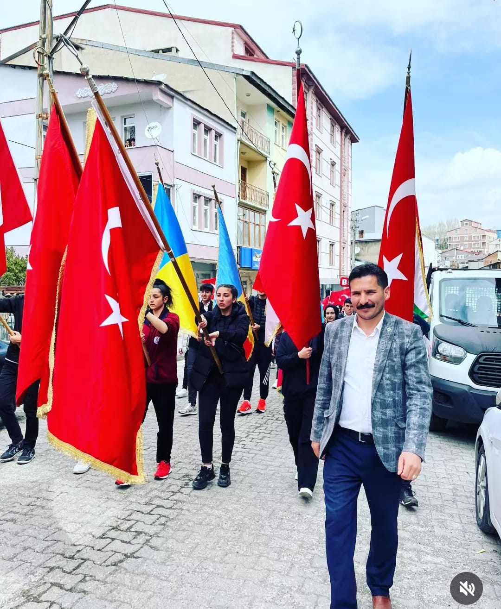

Ferhat Özdemir
Hayallerinin Peşinde..
Sarıkamış’ın Karakurt köyünde 20 Aralık 1981 tarihinde doğdum. Evli ve 2 çocuk babasıyım. Şuan görevime Sarıkamış Şehitleri Mesleki ve Teknik Anadolu Lisesi’nde Müdür Yardımcısı olarak devam etmekteyim.
-
Lisans: Süleyman Demirel Üniversitesi - Teknik Eğitim Fakültesi - Makine Eğitimi/Öğretmenliği - Tesisat Öğretmenliği
- Genç İş Gücü Niteliklerinin Avrupa Standartlarına Yükseltilmesi
- Sarıkamış'ın Enerji Rotası: RES Odaklı İstihdam için Avrupa'da Yenilenebilir Kaynaklar Stajı
-
09.2020 - Şu ana kadar: Müdür Yardımcısı (Görevlendirme) - Sarıkamış Şehitleri Mesleki ve Teknik Anadolu Lisesi (KARS/SARIKAMIŞ)
Süre: 4 ay
-
09.2020 - Şu ana kadar: Öğretmen - İl Milli Eğitim Müdürlüğü (KARS/MERKEZ)
Süre: 4 ay
-
09.2018 - 07.2019: Müdür Yardımcısı (Görevlendirme) - Yusufeli Çok Programlı Anadolu Lisesi (ARTVİN/YUSUFELİ)
Süre: 9 ay
-
08.2016 - 09.2020: Öğretmen - Yusufeli Çok Programlı Anadolu Lisesi (ARTVİN/YUSUFELİ)
Süre: 4 yıl
-
02.2016 - 08.2016: Öğretmen - Arhavi Mesleki ve Teknik Anadolu Lisesi (ARTVİN/ARHAVİ)
Süre: 5 ay
-
10.2015 - 01.2016: Öğretmen - Başköy İlkokulu (KARS/SARIKAMIŞ)
Süre: 1 ay
-
10.2014 - 06.2015: Öğretmen - Başköy İlkokulu (KARS/SARIKAMIŞ)
Süre: 3 ay
-
09.2011 - 06.2012: Öğretmen - Başköy Yatılı Bölge Ortaokulu (KARS/SARIKAMIŞ)
Süre: 7 ay
-
09.2010 - 06.2011: Öğretmen - Başköy Yatılı Bölge Okulu (KARS/SARIKAMIŞ)
Süre: 6 ay
-
07.2009 - 01.2010: 4. mknz p.tug.topçu tb.kh.ve hiz.komutanlığı (EDİRNE/KEŞAN)
Süre: 6 ay
📧 ferhat-ozdemir_1981@hotmail.com
📞 -
🌐